컴퓨터응용가공산업기사 (2011-10-02 기출문제)
1과목: 기계가공법 및 안전관리
1. 1차로 가공된 가공물의 안지름보다 다소 큰 강구(steel ball)를 압입 통과시켜서 가공물의 표면을 소성변형으로 가공하는 방법은?
- 버니싱(burnishing)
- 래핑(lapping)
- 호닝(honing)
- 그라인딩(grinding)
(정답률: 79%)

2. 선반작업을 할 때 절삭속도를 v(m/min), 원주율을 π, 회전수를 n(rpm)이라고 할 때 일감의 지름 d(mm)를 구하는 식은?
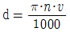
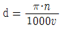
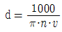
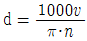
(정답률: 75%)
3. 다음 중 가공물이 회전운동하고 공구가 직선이송 운도을 하는 공작기계는?
- 선반
- 보링 머신
- 플레이너
- 핵 쏘잉 머신
(정답률: 91%)
4. 결합제의 주성분은 열경화성 합성수지 베크라이트로 결합력이 강하고 탄성이 커서 고속도강이나 광학유리 등을 절단하기에 적합한 숫돌은?
- vitrified 계 숫돌
- resinoid 계 숫돌
- silicate 계 숫돌
- rubber 계 숫돌
(정답률: 62%)
5. 트위스트 드릴의 각부에서 드릴 홈의 골부위(웨브 두께)를 측정하기에 가장 적합한 것은?
- 나사 마이크로미터
- 포인트 마이크로미터
- 그루브 마이크로미터
- 다이얼 게이지 마이크로미터
(정답률: 51%)
6. 드릴링 머신의 안전사항으로 어긋난 것은?
- 장갑을 끼고 작업을 하지 않는다.
- 가공물을 손으로 잡고 드릴링한다.
- 구멍 뚫기가 끝날 무렵은 이송을 천천히 한다.
- 얇은 판의 구멍뚫기에는 보조판 나무를 사용하는 것이 좋다.
(정답률: 92%)
7. 선반가공에서 절삭속도를 빠르게 하는 고속절삭의 가공특성에 대한 내용으로 틀린 것은?
- 절삭능률 증대
- 구성인선 증대
- 표면 거칠기 향상
- 가공 변질층 감소
(정답률: 71%)
8. 내면 연삭에 대한 특징이 아닌 것은?
- 외경 연삭에 비하여 숫돌의 마멸이 심하다.
- 가공도중 안지름은 측정하기 곤란하므로 자동치수 측정장치가 필요하다.
- 숫돌의 바깥지름이 작으므로 소정의 연삭속도를 얻으려면 숫돌축의 회전수를 높여야 한다.
- 일반적으로 구멍 내면연삭의 저도를 높게 하는 것이 외면 연삭보다 쉬운 편이다.
(정답률: 63%)
9. 한계 게이지의 특징이라고 볼 수 없는 것은?
- 제품의 실제치수를 알 수 없다.
- 조작이 어렵고 숙련이 필요하다.
- 대량측정에 적합하고 합격, 불합격의 판정이 용이하다.
- 측정치수가 결정됨에 따라 각각 통과측, 정치측의 게이지가 필요하다.
(정답률: 69%)
10. 보통선반의 이송 스크류의 리드가 4mm이고 200등분된 눈금의 칼라가 달려있을 때, 20눈금을 돌리면 테이블은 얼마 이동하는가?
- 0.2 mm
- 0.4 mm
- 20 mm
- 40 mm
(정답률: 69%)
11. 선반의 운전 중에도 작업이 가능한 척(chuck)으로 지름 10mm 정도의 균일한 가공물을 다량생산하기에 가장 적합한 것은?
- 벨(bell) 척
- 콜릿(collet) 척
- 드릴(drill) 척
- 공기(air) 척
(정답률: 52%)
12. CNC 선반에서 홈 가공시 1.5초 동안 공구의 이송을 잠시 정지시키는 지령 방식은?
- G04 P1500
- G04 Q1500
- G04 X1500
- G04 U1500
(정답률: 88%)
13. 인벌류트 치형을 정확히 가공할 수 있는 기어 절삭법은?
- 총형 커터에 의한 절삭법
- 창성에 의한 절삭법
- 형판에 의한 절삭법
- 압출에 의한 절삭법
(정답률: 60%)
14. 나사측정의 대상이 되지 않는 것은?
- 피치
- 리드각
- 유효지름
- 바깥지름
(정답률: 70%)
15. 수평밀링 머신에서 사용하는 커터 중 절단과 홈파기가공을 할 수 있는 것은?
- 평면 밀링 커터(plane milling cutter)
- 측면 밀링 커터(side milling cutter)
- 메탈 슬리팅 쏘(metal slitting saw)
- 엔드밀(end mill)
(정답률: 52%)
16. 일반적으로 안전을 위하여 보호장갑을 끼고 작업을 해야 하는 것은?
- 밀링 작업
- 선반 작업
- 용접 작업
- 드릴링 작업
(정답률: 94%)
17. 밀링커터의 날수가 4개, 한날 당 이송량이 0.15 mm, 밀링 커터의 지름이 25mm 이고 절삭속도가 40m/min 일 때, 테이블의 이송속도는 약 몇 mm/min 인가?
- 156
- 246
- 306
- 406
(정답률: 65%)
18. 선반작업에서 가늘고 긴 가공물을 절삭하기 위하여 꼭 필요한 부속품은?
- 면판
- 돌리개
- 맨드릴
- 방진구
(정답률: 82%)
19. 다음 드릴링 머신 중에서 대형 중량물의 구멍가공을 하기 위하여 암과 드릴헤드를 임의의 위치로 이동이 가능한 것은?
- 직립 드릴링 머신
- 탁상 드릴링 머신
- 다두 드릴링 머신
- 레디얼 드릴링 머신
(정답률: 83%)
20. 형상공차의 측정에서 진원도의 측정 방법이 아닌 것은?
- 강선에 의한 방법
- 직경법에 의한 방법
- 반경법에 의한 방법
- 3점법에 의한 방법
(정답률: 64%)
2과목: 기계설계 및 기계재료
21. 다음 주철 중 인장가도가 가장 낮은 것은?
- 백심가단주철
- 구상흑연주철
- 보통주철
- 흑심가단주철
(정답률: 65%)
22. 담금질한 강에 인성을 증가시키고 경도를 감소시키기 위하여 강을 A1점 이하의 온도로 다시 가열하여 인성을 증가시키는 열처리를 무엇이라 하는가?
- 하드페이싱
- 숏피닝
- 질화법
- 뜨임
(정답률: 82%)
23. 다음 담금질 조직 중에서 경도가 가장 큰 것은?
- 페라이트
- 펄라이트
- 마텐자이트
- 트루스타이트
(정답률: 88%)
24. 다음 중 일반적인 청동합금의 주요 성분은?
- Cu-Sn
- Cu-Zn
- Cu-Pb
- Cu-Ni
(정답률: 67%)
25. 탄소강에서 탄소함유량이 증가할 경우 탄소강의 기계적성질은 어떻게 변화하는가?
- 경도 및 연성 감소
- 경도 및 연성 증가
- 강도 및 경도 감소
- 강도 및 경도 증가
(정답률: 69%)
26. 다음 기계재료 중 용광로(고로)에서 대량으로 제조되는 것은?
- 구리
- 선철
- 주철
- 탄소강
(정답률: 69%)
27. 냉간 가공과 열간 가공을 구별할 수 있는 온도를 무슨 온도라고 하는가?
- 포정온도
- 공석온도
- 공정온도
- 재결정온도
(정답률: 85%)
28. 티탄의 일반적인 성질에 속하지 않는 것은?
- 비교적 비중이 작다.
- 용융점이 낮다.
- 열전도율이 낮다.
- 산화성 수용액 중에서 내식성이 크다.
(정답률: 51%)
29. 100~200℃에서 공냉방법으로 마텐자이트 조직을 얻는 저온 뜨임의 목적에 해당되지 않는 것은?
- 담금질 응력 제거
- 치수의 경년화 방지
- 연마균열 방지
- 마모성의 향상
(정답률: 65%)
30. 다음 중 구리(Cu)의 성질을 설명한 것으로 틀린 것은?
- 황산, 염산에 대한 내식성이 크다.
- 전기전도율과 열전도율은 금속 중에서 은(Ag) 다음으로 높다.
- 연성과 전성이 풍부하다.
- Ni, Sn, Zn 등과 합금이 잘된다.
(정답률: 71%)
31. 90rpm으로 회전하고 980N의 하중을 받는 레이디얼 볼베어링의 기본 동정격하중은 약 몇 kN인가? (단, 하중계수는 1로 하고, 수명은 5000시간으로 한다.)
- 2.94
- 4.91
- 8.83
- 15.70
(정답률: 30%)
32. 구조는 간단하면서 복잡한 운동을 구현할 수 있는 기계요소로서 내연 기관의 밸브 개폐기구 등에 사용되는 것은?
- 마찰차(friction wheel)
- 클러치(clutch)
- 기어(gear)
- 캠(cam)
(정답률: 70%)
33. 축의 자중을 무시하고 회전축의 중심에서 1개의 회전체의 하중에 의해 축의 처짐이 0.01mm 발생하면, 축의 위험속도는 약 몇 rpm 인가?
- 4598 rpm
- 6420 rpm
- 9458 rpm
- 14568 rpm
(정답률: 43%)
34. 수압이 2.75MPa이고, 허용인장강도가 49.⑤MPa이며, 이음 효율이 70%인 강관의 바깥지름은 몇 mm 이상이어야 하는가? (단, 부식 여유는 1mm이고, 강관의 안지름은 580mm이다.)
- 582
- 629
- 604
- 675
(정답률: 44%)
35. 기어 설계 시 전위 기어를 사용하는 이유로 거리가 먼 것은?
- 중심 거리를 자유로이 변화시키려고 할 경우에 사용
- 언더컷을 피하고 싶은 경우에 사용
- 베어링에 작용하는 압력을 줄이고자 할 경우 사용
- 기어의 강도를 개선하려고 할 경우 사용
(정답률: 39%)
36. 4m/s의 속도로 전동하고 있는 벨트의 긴장측의 장력이 1.23kN, 이완측의 장력이 0.49kN 라고 하면, 전달하고 있는 동력은 몇 kW인가?
- 1.55
- 1.86
- 2.21
- 2.96
(정답률: 32%)
37. 밴드 브레이크의 긴장측 장력 7.99kN, 두께 2mm, 허용인장응력 78.48 MPa 일 때 밴드의 폭은 약 몇 mm 이상이어야 하는가? (단, 이음 효율은 100%로 한다.)
- 43
- 51
- 60
- 71
(정답률: 39%)
38. 다음 중 운동용 나사에 해당하지 않는 것은?
- 사각 나사
- 사다리꼴 나사
- 톱니 나사
- 미터 나사
(정답률: 71%)
39. 두 축의 중심거리 300mm, 속도비가 2:1로 감속되는 외접원통마찰의 원동차(D1)와 종동차(D2)의 지름은 각각 몇 mm 인가?
- D1 = 600mm, D2 = 1200mm
- D1 = 200mm, D2 = 400mm
- D1 = 100mm, D2 = 200mm
- D1 = 300mm, D2 = 600mm
(정답률: 50%)
40. 마찰에 의하여 회전력을 전달하며 축의 임의의 위치에 보스를 고정할 수 있는 키는?
- 미끄럼키
- 스플라인
- 접선키
- 원뿔키
(정답률: 37%)
3과목: 컴퓨터응용가공
41. 다음 중 곡선의 2차 미분과 관련되는 것은?
- 곡선의 기울기
- 곡선의 곡률
- 곡선 위의 특정점에서의 접선
- 곡선의 길이
(정답률: 57%)
42. NC 기계의 DNC 통신에서 병렬포트가 아니라 직렬포트를 쓰는 이유에 대한 설명 중 가장 거리가 먼 것은?
- 통신속도가 빠르다.
- 데이터 손실이 적다.
- 데이터를 주고받을 수 있다.
- 잡음에 대한 성능이 우수하다.
(정답률: 65%)
43. 곡면 모델을 사용할 때 처리하지 못하거나 어려운 작업은?
- 은선 제거
- NC 가공경로 생성
- 복잡한 형상처리
- 부피 계산
(정답률: 79%)
44. CAD/CAM 시스템의 입력장치가 아닌 것은?
- 키보드(keyboard)
- 마우스(mouse)
- 스타일러스 펜(stylus pen)
- 플로터(plotter)
(정답률: 84%)
45. 3차원 솔리드 모델의 primitive 요소라고 볼 수 없는 것은?
- 원뿔
- 구
- 육면체
- 삼각면
(정답률: 78%)
46. 중앙처리장치(CPU)의 구성요소가 아닌 것은?
- 기억장치(memory unit)
- 파일저장장치(file storage unit)
- 연산논리장치(ALU)
- 제어장치(control unit)
(정답률: 76%)
47. 다음 식으로 표현된 도형의 결과를 무엇이라고 하는가? (단, xc와 yc는 임의의 좌표값이고 r은 xc와 yc에서 떨어진 직선거리이다.)
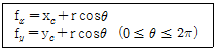
- 타원
- 포물선
- 쌍곡선
- 원
(정답률: 47%)
48. 네 개의 경계 곡선을 선형 보간하여 곡면을 표현하는 것은?
- Coons 곡면
- Ruled 곡면
- B-Spline 곡면
- Bezier 곡면
(정답률: 77%)
49. 도면을 파악하고 나서 생산성을 높이기 위해 공작기계 및 공구선정, 가공순서, 절삭조건 등을 계획하는 작업은?
- 공정계획
- 자재수급계획
- NC데이터 생성
- 가공경로계획
(정답률: 69%)
50. 기하학적 형상을 나타내는 방법 중 형상 표현 및 출력 자료구조가 가장 간단한 것은?
- 와이어프레임 모델링(Wireframe modeling)
- 곡면 모델링(Surface modeling)
- 솔리드 모델링(Solid modeling)
- 비다양체 모델링(Non-manifold modeling)
(정답률: 69%)
51. 일반적인 CAD 시스템에서 직선의 작성방법이 아닌 것은?
- 두 점에 의해서 구성되는 선
- 곡면간의 교차에 의한 방법
- 한 점을 지나고 수평선과 일정각도를 이루는 선
- 한 점에서 직선에 대한 평행선 혹은 수직선
(정답률: 57%)
52. 3D CAD 모델로부터 2D 도면을 생성하는 것에 관하여 틀리게 설명하고 있는 것은?
- 어느 각도에서든지 3D CAD 모델의 해당 2D 도면을 생성할 수 있다.
- 3각법은 투영시킬 물체와 사람 사이에 투영면을 위치시킨다.
- 3D wireframe을 투영시키면 도면에 은선(hidden line)제거가 가능하다.
- 1각법은 투영면과 사람 사이에 투영시킬 물체를 위치시킨다.
(정답률: 73%)
53. B-스플라인 곡선에 대한 다음 설명 중 틀린 것은?
- 차수가 2인 경우 1차 미분연속을 갖는다.
- 특수한 경우에 한하여 Bezier곡선으로 표시될 수 있다.
- 균일 절점벡터는 주기적인 B-스필라인을 구현한다.
- 곡선의 형상을 국부적으로 수정하기 어렵다.
(정답률: 64%)
54. 3차원 좌표계에서 물체의 크기를 각각 x축 방향으로 2배, y축 방향으로 3배, z축 방향으로 4배의 크기로 확대 변환하고자 한다. 사용되는 좌표변환 행력식은?
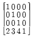
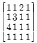
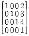
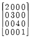
(정답률: 70%)
55. 선박의 프로펠러, 터빈 블레이드, 타이어 금형모델 등을 가공하는데 적합한 NC가공방식은?
- 2.5축 가공
- 3축 가공
- 4축 가공
- 5축 가공
(정답률: 79%)
56. 무게, 무게중심, 모멘트 등 물리적 성질의 계산이 가능한 형상 모델링 방법은?
- 와이어 프레임 모델링
- 곡면 모델링
- 솔리드 모델링
- 시스템 모델링
(정답률: 82%)
57. 3차원 형상모델로 분해모델로 저장하는 방법 중 틀린 것은?
- 복셀(Voxel) 모델
- 옥트리(Octree) 표현
- 세포분해(Cell Decomposition) 모델
- Facet 모델
(정답률: 61%)
58. 서로 다른 CAD/CAM 시스템 간에 도면 및 기하학적 형상 데이터를 교환하기 위한 데이터 형식을 정한 표준 규격인 것은?
- ISO
- STL
- SML
- IGES
(정답률: 83%)
59. 2차원상의 한 점 P=[ x y 1 ]을 회전시키기 위해 곱해지는 3×3 동차 변환행렬 [Tref]의 형태로서 알맞은 것은?
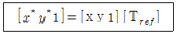
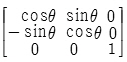
(0≤θ≤2π)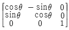
(0≤θ≤2π)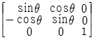
(0≤θ≤2π)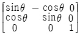
(0≤θ≤2π)
(정답률: 45%)
60. 다음 중 Bezier 곡선의 특징이 아닌 것은?
- 볼록 껍질(convex hull)의 성질이 있다.
- 1개의 정점 변화가 곡선 전체에 영향을 미친다.
- Hermite 블렌딩 함수를 사용한다.
- 조정점(control point)의 순서를 거꾸로 하여 곡선을 생성하여도 같은 곡선이다.
(정답률: 47%)
4과목: 기계제도 및 CNC공작법
61. 그림에 표시한 표면의 결 도시기호에서 줄무늬 방향의 기호를 기입하는 위치는?
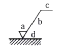
- a
- b
- c
- d
(정답률: 81%)
62. 도면에
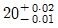
로 표시된 치수의 치수공차는 얼마인가?- 0.01
- -0.01
- 0.03
- 0.02
(정답률: 81%)
63. 그림과 같이 도면에 나사 표시가 Tr10×2로 표시되어 있을 때 올바른 해독은?
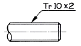
- 볼나사 호칭 지름 10인치
- 둥근나사 호칭 지름 10mm
- 미터 사다리꼴 나사 호칭 지름 10mm
- 관용 테이퍼 수나사 호칭 지름 10mm
(정답률: 81%)
64. 도면 부품란에 재질이 KS 재료기호 GC 250 으로 표시된 재질 설명으로 옳은 것은?
- 가단주철 인장강도 250 N/mm2 이상
- 가단주철 인장강도 250 kgf/mm2 이상
- 회주철 인장강도 250 N/mm2 이상
- 회주철 인장강도 250 kgf/mm2 이상
(정답률: 57%)
65. 다음 중 축의 도시방법에 대한 설명으로 틀린 것은?
- 축의 외경이 클수록 키 홈의 크기는 큰 것을 사용하는 것이 좋다.
- 축 끝의 센터구멍의 도시기호는 가는 1점 쇄선으로 표시한다.
- 길이가 긴 축은 중간을 파단하고 짧게 그릴 수 있다.
- 축 끝에는 일반적으로 모떼기를 한다.
(정답률: 55%)
66. 단면도의 표시방법에서 그림과 같은 단면도의 형태는?
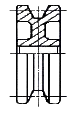
- 온 단면도
- 한쪽 단면도
- 부분 단면도
- 회전 도시 단면도
(정답률: 55%)
67. 표제란에 대한 설명으로 틀린 것은?
- 도면에 반드시 있어야 하는 항목이다.
- 회사 또는 학교에 따라 양식이 다소 차이가 있을 수 있다.
- 설계자, 도명, 척도, 투상법 등을 기입한다.
- 각 부품의 명칭 및 수량을 기입한다.
(정답률: 71%)
68. 다음 중 가상선의 용도가 아닌 것은?
- 되풀이 하는 것을 나타내는데 사용
- 도형의 중심을 나타내는데 사용
- 인접부분을 참고로 나타내는데 사용
- 가공 전ㆍ후의 모양을 나타내는데 사용
(정답률: 70%)
69. 다음 도면에서 기하공차에 관한 설명으로 올바른 것은?
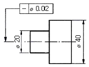
- ø20부분만 원통도가 ø0.02 범위 내에 있어야 한다.
- ø20과 ø부분의 원통도가 ø0.02범위 내에 있어야 한다.
- ø20부분만 진직도가 ø0.02의 범위 내에 있어야 한다.
- ø20과 ø40부분의 진직도가 ø0.02범위 내에 있어야 한다.
(정답률: 62%)
70. 납선이나 구리선을 사용하여 스케치하는 방법은?
- 프리핸드법
- 프린트법
- 본뜨기법
- 사진 촬영법
(정답률: 73%)
71. CNC선반에서 N [rpm]으로 회전하는 스핀들에서 n [회전] 휴지(dwell)를 주려고 한다. 정지시간(초)을 계산하는 식을 맞게 표현한 것은?
- 정지시간(초)=N(rpm)×60 / n(회전)
- 정지시간(초)=n(회전)×60 / N(rpm)
- 정지시간(초)=N(rpm) / n(회전)×60
- 정지시간(초)=n(회전) / N(rpm)×60
(정답률: 55%)
72. CNC선반 가공에서 절삭가공 길이 300mm, 회전수 1000rpm, 이송속도 0.2mm/rev 일 때 가공시간은 몇 분인가?
- 1.5
- 1
- 0.5
- 0.2
(정답률: 59%)
73. CNC선반에서 G92로 나사를 가공하려 할 때 나사의 리드(lead)를 나타내는데 필요한 것은?
- M
- C
- P
- F
(정답률: 67%)
74. CNC선반의 어드레스 중 일반적으로 지름 지정으로 지령하는 것은?
- R10.0
- U10.0
- I5.0
- K5.0
(정답률: 65%)
75. 머시닝센터 프로그램에서 원호 가공시 I, J의 의미는?
- 원호의 시점에서 원호의 끝점까지의 벡터량
- 원호의 중점에서 원호의 시점까지의 벡터량
- 원호의 끝점에서 원호의 시점까지의 벡터량
- 원호의 시점에서 원호의 중심점까지의 벡터량
(정답률: 68%)
76. 다음 중 안전에 대한 설명으로 틀린 것은?
- CNC선반 공작물은 무게중심을 맞춰야 안전하다.
- CNC선반에서 나사가공시 Feed Overrie는 100%로 해야 한다.
- 바이트의 자루는 가능한 굵고 짧은 것을 사용한다.
- 드릴은 Chip의 배출이 어려우므로, 가능한 절삭속도를 크게 해야 한다.
(정답률: 78%)
77. CNC 공작기계에서 사용하는 펄스 분배방식 중 원호보간에 우수한 방식은?
- DDA방식
- 대수연산 방식
- MIT 방식
- 유한요소 방식
(정답률: 54%)
78. 최소 설정단위가 0.001mm인 CNC 공작기계에서 X축 (+)방향으로 50mm 이동시키기 위한 정수입력은?
- X50
- X500
- X5000
- X50000
(정답률: 71%)
79. 고속가공의 일반적인 특징에 해당하지 않은 것은?
- 표면조도를 향상시킨다.
- 절삭저항이 저하되고 공구수명이 길어진다.
- 난삭재의 가공은 곤란하다.
- 황삭부터 정삭까지 One-Setup가공이 가능하다.
(정답률: 50%)
80. 공구기능(T code) T0101의 설명으로 옳은 것은?
- 공구 보정 없이 1번 공구 선택
- 1번 공구의 1번 공구 보정 수행
- 1번 공구의 1번 공구 보정 취소
- 1번 공구의 1번 반복 수행
(정답률: 88%)